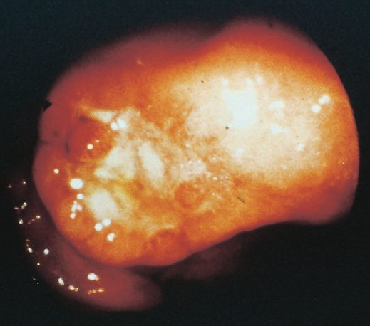
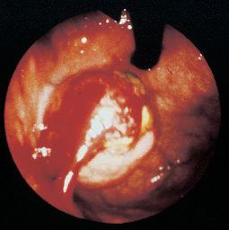
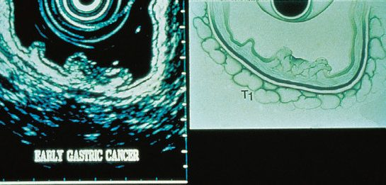
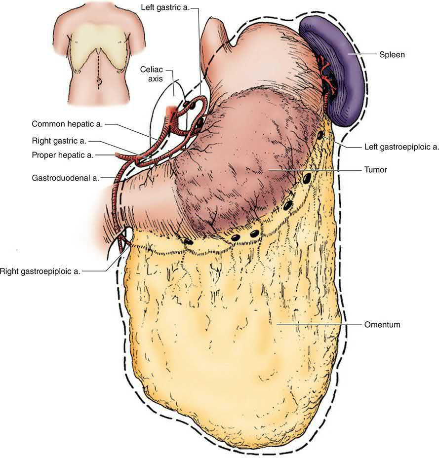

Gastric Cancer
Summary
- Gastric cancer (predominantly adenocarcinoma) is a major cause of cancer mortality worldwide; its prognosis tends to be poor, with cure rates little better than 5–10% overall, although better outcomes are achieved in Japan, where the disease is common and screening is established [1].
- It is one of the most common malignancies worldwide, with over 1 million cases and over 780,000 deaths per year, the prevalence highest in Asia and Eastern Europe and much lower in North America and Northern Europe [2].
- Gastric cancer is eminently curable when caught early, but late presentation is common and drives poor overall survival; the only curative treatment is resectional surgery [1].
- More than 50% of patients present with disease already extending beyond locoregional confines [3].
In the UK, oesophago-gastric cancer is managed along a defined NHS pathway. Primary care refers against the suspected-cancer criteria; every patient with confirmed disease is discussed at a specialist multidisciplinary meeting; staging laparoscopy is offered to all with potentially curable gastric cancer; curative resection is performed only in specialist units by specialist oesophago-gastric surgeons; and perioperative chemotherapy is given around radical resection [4][5].
![The four-stage NHS gastric cancer pathway. Stage 1, referral and initial assessment: refer on the suspected cancer pathway for dysphagia at any age, or age 55 and over with weight loss together with upper abdominal pain, reflux or dyspepsia (NG12 1.2.7), and consider a suspected cancer pathway referral for an upper abdominal mass consistent with stomach cancer (NG12 1.2.6). Stage 2, curative staging: staging laparoscopy is universal, offered to all people with potentially curable gastric cancer (NG83 1.3.5), while endoscopic ultrasound (NG83 1.3.6) and F-18 FDG PET-CT (NG83 1.3.7) are selective, used only where they will guide ongoing management. Stage 3, radical management: curative resections are done in a specialist surgical unit by specialist oesophago-gastric surgeons (NG83 1.2.3); offer chemotherapy before and after surgery, and consider a D2 lymph node dissection at curative gastrectomy (NG83 1.4.9, 1.4.10). Stage 4, follow-up and post-treatment support: give information about the symptoms of recurrence with rapid access to the multidisciplinary team if they develop, and do not offer routine clinical follow-up or routine radiological surveillance solely to detect recurrent disease (NG83 1.7.1, 1.7.2). Note the contrast with the textbook staging sequence above, in which EUS is the routine next step for suspected early disease and laparoscopy is reserved for T3/T4 or N1 tumours](../assets/infographics/gastric-cancer-uk-pathway.webp)
Definition
Gastric tumours may arise from mucosa (adenocarcinoma), the connective tissue of the stomach wall (gastrointestinal stromal tumours, GISTs), neuroendocrine tissue (carcinoid tumours), or lymphoid tissue (lymphomas), with adenocarcinoma being the dominant "gastric cancer" [3]. Gastric cancer is divided into early gastric cancer, defined as cancer limited to the mucosa and submucosa regardless of nodal status (T1, any N), and advanced gastric cancer, which invades the muscularis [1].
Non-adenocarcinoma gastric tumours
- GISTs are the most common mesenchymal neoplasm of the GI tract, derived from the interstitial cells of Cajal (the GI pacemaker cells residing in the muscularis propria) and arise most commonly in the stomach (40–60%), then small intestine (20–40%) and colon/rectum (5–15%) [2].
- Approximately 95% of GISTs express KIT (CD117), with KIT mutations identified in 75–85%; most KIT-wild-type tumours carry a PDGFRA mutation, and many of the small KIT/PDGFRA-wild-type subset are succinate dehydrogenase deficient [2].
- The stomach is the most common site of extranodal lymphoma, though primary gastric lymphoma accounts for only about 3% of gastric cancers; diffuse large B-cell lymphoma is commonest (45–60%), followed by gastric MALT lymphoma (40–50%) [2].
Pathophysiology
Gross and histological classification
- The Borrmann classification, developed in 1926 from the gross appearance of advanced tumours, divides gastric adenocarcinoma into type I polypoid, type II fungating, type III ulcerating, and type IV diffusely infiltrating growths, the last also called linitis plastica in signet ring cell carcinoma.
- It is useful for describing endoscopic findings but its prognostic significance is limited [2].
- Early gastric cancer is subclassified by the Japanese classification into protruding (type I), superficial (type II: a-elevated, b-flat, c-depressed), and ulcerated (type III) forms [1].


- The Laurén classification, proposed in 1965, divides gastric adenocarcinoma by histology into intestinal and diffuse types, with mixed-type tumours added subsequently [2].
- The intestinal variant is more well differentiated, tends to form glands, typically arises in a recognisable precancerous condition such as gastric atrophy or intestinal metaplasia, affects males more than females, increases in incidence with age, and is the dominant histology where gastric cancer is epidemic, suggesting an environmental cause [2].
- The diffuse form consists of tiny clusters of small uniform signet ring cells, is poorly differentiated, lacks glands, spreads submucosally with early metastatic spread via transmural extension and lymphatic invasion, is not generally associated with chronic gastritis, is equally frequent in both sexes, affects a slightly younger age group, and is associated with blood type A [1][2].
| Feature | Intestinal type | Diffuse type |
|---|---|---|
| Differentiation | Well differentiated, gland-forming | Poorly differentiated, lacks glands; signet ring cells |
| Precursor lesion | Gastric atrophy, intestinal metaplasia | Usually none; not associated with chronic gastritis |
| Sex distribution | Male predominance | Equal in both sexes |
| Age | Incidence rises with age | Slightly younger |
| Blood group | Not characteristic | Association with group A |
| Preferred metastatic route | Liver | Peritoneal cavity (carcinomatosis) |
| Prognosis | Better | Less favourable |
Table compiled from the Laurén classification above [1][2].
- Diffuse-type tumours often metastasise to the peritoneal cavity as carcinomatosis, whereas intestinal-type tumours more frequently metastasise to the liver [2].
- Combining the Laurén classification with tumour location gives the modified Laurén classification (diffuse, proximal non-diffuse, or distal non-diffuse) which predicts survival better than histological classification alone, distal non-diffuse cancers having the best prognosis and diffuse cancers the worst [2].
- The WHO classifies gastric cancer as tubular, papillary, mucinous, poorly cohesive (including signet ring cell), or mixed; tubular and papillary correspond broadly to Laurén intestinal type and poorly cohesive to diffuse type, but the system adds little prognostic or therapeutic utility [2].
Molecular subtypes
- The Cancer Genome Atlas identified four molecular subtypes in 2014: Epstein-Barr virus positive, microsatellite unstable (MSI), genomically stable (GS), and chromosomal instability (CIN), with recurrent mutations in genome-integrity genes (BRCA2, TP53, ARID1A), chromatin remodelling genes, and cell-adhesion genes (RHOA, CDH1) [1][2].
- CIN tumours generally show intestinal-type histology with a high prevalence of TP53-inactivating mutations, whereas GS tumours are enriched for diffuse-type histology and somatic CDH1 mutations.
- The classification is not a strong prognostic indicator on its own but predicts response to therapy, since MSI tumours are generally unresponsive to cytotoxic chemotherapy while MSI and EBV tumours respond better to immunotherapy [2].
- The Asian Cancer Research Group proposed a parallel scheme in 2015 dividing tumours into MSI, microsatellite stable with active TP53, microsatellite stable with inactive TP53, and microsatellite stable with epithelial-mesenchymal transition [2].
Routes of spread
Spread occurs by direct invasion into adjacent organs (pancreas, colon, liver), lymphatic permeation/emboli (which may reach supraclavicular nodes, Troisier's sign), haematogenous spread (first to liver), and transperitoneal spread once the serosa is breached, the last indicating incurability and giving rise to Krukenberg tumours (ovarian metastases) and Sister Joseph's nodule (umbilical metastasis) [1]. Distant metastases are uncommon in the absence of lymph node involvement [1].
Genetic abnormalities and the gastritis–cancer sequence
- Most gastric cancers are aneuploid, and the commonest abnormalities in sporadic tumours affect p53 and COX-2: over two-thirds have deletion or suppression of the tumour-suppressor p53, and approximately the same proportion overexpress COX-2, tumours that overexpress COX-2 are more aggressive, as in the colon, where COX-2 upregulation suppresses apoptosis and increases angiogenesis and metastatic potential [6].
- Schwartz tabulates approximate frequencies of p53 deletion or suppression at 60–70%, microsatellite instability at 25–40% and DNA aneuploidy at 60–75%, with E-cadherin, FHIT, APC and DCC loss and amplification of HGF/SF, VEGF, c-met, β-catenin, k-sam, ras and c-erbB-2 also described [6].
- About 10% of gastric adenocarcinomas carry Epstein-Barr virus, and because EBV transcripts are present in cancer cells but not in the metaplastic precursor epithelium, EBV infection is thought to be a late step in carcinogenesis [6].
- Bone-marrow-derived stem cells have been shown to play a key role in the pathogenesis of adenocarcinoma in chronic H. pylori infection, and the chronic inflammatory milieu induces both genetic and epigenetic change in mucosal cells, producing gastritis-associated cancer through the sequence of chronic superficial gastritis, atrophic gastritis, intestinal metaplasia, dysplasia and cancer [6].
- In a Tokyo series of 1900 early gastric cancers, atrophic gastritis was the precancerous lesion in 94.84%, against adenoma in 2.47%, verrucous gastritis 1.37%, chronic ulcer 0.68%, hyperplastic polyp 0.53% and the gastric remnant 0.11% [6].
- Correa described three patterns of chronic atrophic gastritis, autoimmune (involving the acid-secreting proximal stomach), hypersecretory (involving the distal stomach) and environmental (multiple random areas at the junction of oxyntic and antral mucosa), and in complete intestinal metaplasia the glands are lined by goblet cells and absorptive cells indistinguishable from their small-bowel counterparts; eradication of H. pylori produces significant regression of intestinal metaplasia and improvement in atrophic gastritis, so treatment is mandatory when infection accompanies these findings [6].
Gross morphology, tumour location and the diffuse-type problem
- Four gross subtypes are described: polypoid and fungating tumours are largely intraluminal (the latter ulcerated), whereas in ulcerative and scirrhous tumours the bulk of the mass is confined to the wall; scirrhous tumours infiltrate the whole thickness over a very large area, commonly the entire stomach, and although technically resectable by total gastrectomy both the oesophageal and duodenal margins frequently show microscopic infiltration, distant metastasis is frequent and death within 6 months is common, with palliative chemotherapy prolonging median survival [6].
- Several decades ago the large majority of tumours were distal; a proximal migration has brought the distribution to roughly 40% distal, 30% middle and 30% proximal, which is essential in planning the operation [6].
- In younger patients tumours are more often diffuse, large, aggressive and poorly differentiated, sometimes involving the whole stomach as linitis plastica [6].
Clinical features
- Early gastric cancer has no specific features distinguishing it from benign dyspepsia, requiring a high index of suspicion; any new-onset dyspepsia over the age of 55 should be considered due to adenocarcinoma until proven otherwise [1][3].
- Symptoms tend to be vague and non-specific (most commonly weight loss and persistent abdominal pain) so tumours are frequently diagnosed at advanced stages.
- Growth causes dysphagia when the tumour lies near the gastro-oesophageal junction or gastric outlet obstruction when distal, and gastrointestinal bleeding is common, with 40% of patients having some degree of anaemia [2].
- Advanced disease produces early satiety, bloating, distension, and vomiting; weight loss can be profound [1][3].
- Pain is characteristically unrelieved by eating [7].
- Non-metastatic effects include migratory thrombophlebitis (Trousseau's sign) and deep venous thrombosis [1].
Signs of advanced disease
Examination should look specifically for evidence of advanced disease [2][3][7].
| Sign | Site | Significance |
|---|---|---|
| Virchow node (Troisier's sign) | Left supraclavicular | Metastatic nodal disease |
| Irish node | Axillary | Metastatic nodal disease |
| Sister Mary Joseph node | Periumbilical | Transperitoneal spread |
| Krukenberg tumour | Ovary, on pelvic examination | Transcoelomic drop metastases |
| Blumer shelf | Rectal examination, firm shelf | Peritoneal metastases |
| Hepatomegaly, jaundice, ascites | Abdomen | Intra-abdominal metastases |
| Palpable epigastric mass | Epigastrium | Advanced primary tumour |
- Table compiled from the physical signs above [1][2][3].
- A distal tumour causing pyloric obstruction produces epigastric distension with visible peristalsis and a succussion splash on shaking the abdomen; a pleural effusion on chest examination suggests pulmonary metastases [8].
- Despite the palpable-mass row above, the stomach's position high under the costal margin means a mass is notoriously difficult to feel, its upper edge rarely reached, and it should not be expected on examination even in advanced disease, symptoms of pain, indigestion, and weight loss are far more significant than this physical sign [8].
Complete blood count, chemistry panel including liver function tests, and coagulation studies should be performed; the tumour markers CEA and CA19-9 are sometimes elevated [2].
Paraneoplastic and physical signs
- Acute GI bleeding is somewhat unusual (5%) but chronic occult blood loss is common, presenting as iron-deficiency anaemia and heme-positive stool; paraneoplastic syndromes such as Trousseau's thrombophlebitis, acanthosis nigricans (hyperpigmentation of the axilla and groin) or peripheral neuropathy are rarely present [6].
- The physical examination is typically normal, and other than signs of weight loss, specific positive findings usually indicate incurability: a focused examination covers neck, chest, abdomen and rectum, cervical, supraclavicular and axillary nodes can be sampled by fine-needle aspiration, malignant pleural effusion, ascites or aspiration pneumonitis may be present, an abdominal mass may indicate a large (usually T4) primary, liver metastases or carcinomatosis, and rectal examination may reveal hard extraluminal anterior nodularity, "drop metastases" or Blumer's shelf in the pouch of Douglas [6].
- Most patients diagnosed in the United States have stage III or IV disease, and the most common symptoms are weight loss and decreased intake from anorexia and early satiety, with abdominal pain usually not severe and often ignored [6].
Etiology
Helicobacter pylori and other infectious agents
- Chronic H. pylori infection is globally by far the most important risk factor, associated with approximately 75% of all gastric cancer cases worldwide and classified by the WHO International Agency for Research on Cancer as a group 1 (definite) carcinogen, making stomach cancer the most common infection-related cancer.
- Seropositivity confers an approximately six-fold increased risk, and an increased risk persists even after eradication [2]. H. pylori is epidemiologically linked to carcinoma of the body and distal stomach but not to proximal gastric cancer, whose aetiology remains unclear though it is associated with obesity and higher socioeconomic status [1].
- Gastric cancer is typically associated with a body-predominant gastritis with multifocal atrophy and decreased acid secretion; progression to invasive cancer develops sequentially from non-atrophic gastritis, to atrophic gastritis, then intestinal metaplasia, dysplasia, and adenocarcinoma, and H. pylori-associated cancer is almost always seen in the context of intestinal metaplasia [2].
- The best-characterised virulence factors are cagA and vacA, which co-opt the host inflammatory response; high-risk genotypes act synergistically with proinflammatory interleukin-1 gene cluster variants to increase risk up to 87-fold, and cagA-positive isolates form a higher proportion of strains in East Asian than Western countries [2].
- Latent Epstein-Barr virus infection is also associated with gastric cancer, altering host gene expression through EBV-encoded microRNAs and hypermethylation of host DNA, and forming a distinct molecular subtype [2].
Dietary and environmental factors
- N-nitroso compounds, derived directly from the diet or produced endogenously from nitrates and nitrites, are the major dietary contributors to gastric carcinogenesis; smoked, cured, and preserved meats are the primary sources, and N-nitroso species are also present in cigarette smoke [2].
- Salted and pickled food intake is associated with gastric cancer, possibly through mucosal injury, while fresh fruits and vegetables supply ascorbic acid, an antioxidant that inhibits conversion of nitrites to N-nitroso compounds, so low intake of fresh produce raises risk [2].
- The WHO IARC classified processed meats as a group 1 carcinogen in 2015 [2].
- The decline in gastric cancer incidence among Japanese families emigrating to the USA supports a strong dietary and environmental component [1].
- Long-term proton pump inhibitor use has been linked epidemiologically to increased risk, plausibly by a pH-dependent mechanism allowing overgrowth of nitrite-producing bacteria, and deprescribing PPIs is recommended for patients without an ongoing indication [2].
Hereditary syndromes
- Hereditary diffuse gastric cancer classically results from a germline mutation in CDH1, encoding E-cadherin [2][7].
- Original lifetime risk estimates of 55–70% were subject to ascertainment bias from high-burden kindreds; current estimates are 37–42% for males and 25–33% for females, rising to 64% and 47% in families with three or more gastric cancer cases and falling to 27% and 24% in families with two or fewer [2].
- Females with a germline CDH1 mutation also carry a 39–55% risk of lobular breast cancer, and annual surveillance with breast MRI is recommended from age 30, since lobular cancer often forms neither a discrete mass nor microcalcifications and mammography is correspondingly less useful [2].
- Prophylactic total gastrectomy should be considered for medically fit individuals at significant risk, typically between the ages of 20 and 30 years; in the vast majority of cases microscopic foci of early gastric cancer are found in the specimen [2].
- For those who decline or defer gastrectomy, annual endoscopy with Cambridge protocol biopsies (targeted biopsies of all identified lesions plus at least 6 random biopsies from each of 5 anatomical regions) or Bethesda protocol biopsies (targeted biopsies plus at least 4 random biopsies from each of 22 sites) is recommended, with the targeted biopsies probably the most important element [2].
| Gene | Syndrome | Gastric cancer risk | Other cancer risks |
|---|---|---|---|
| CDH1 | Hereditary diffuse gastric cancer | Up to 70% | Lobular breast |
| CTNNA1 | Hereditary diffuse gastric cancer | Up to 57% | Lobular breast |
| STK11 | Peutz-Jeghers syndrome | 29% | Breast, GI, pancreas, ovarian, lung, gynaecological |
| SMAD4, BMPR1A | Juvenile polyposis | 21% | Colon, pancreas, small bowel |
| APC promoter 1B | Gastric adenocarcinoma and proximal polyposis of the stomach (GAPPS) | 12–25% | Unknown, possibly colon |
| MLH1, MSH2, MSH6, PMS2 | Lynch syndrome | 1–13% | Colon, ovarian, uterine, urinary tract |
| MUTYH | MUTYH-associated polyposis | 2% | Colon, duodenal, ovarian, bladder, skin |
| APC | Familial adenomatous polyposis | 1–2% | Colon, duodenum, thyroid |
- Table reproduces the hereditary syndromes above [2].
- GAPPS is characterised by fundic gland polyposis classically carpeting the proximal stomach with more than 100 polyps, which can progress to dysplasia and invasive cancer; gastroscopy should be performed annually from age 15, and risk-reducing total gastrectomy considered from the third decade [2].
- Upper GI screening by endoscopy from the teenage years is recommended in juvenile polyposis and Peutz-Jeghers syndromes [2].
Gastric polyps
- Gastric polyps are found in approximately 6% of gastroscopies in the United States and are usually asymptomatic; all detected polyps should be biopsied, solitary polyps larger than 1 cm should undergo complete polypectomy, and normal antral and body mucosa should be biopsied to exclude atrophic gastritis and diagnose H. pylori [2].
- Adenomatous polyps carry a 15% cancer risk and can progress to atypia, dysplasia, and invasive carcinoma, the risk correlating with increasing size, villous contour, and degree of dysplasia; the risk of synchronous or metachronous gastric cancer is also elevated, making endoscopic follow-up mandatory after resection [2][3].
- Hyperplastic polyps most commonly arise in chronic atrophic gastritis and harbour foci of dysplasia in approximately 1–20%, the risk being higher in pedunculated polyps and those larger than 1 cm [2].
- Fundic gland polyps are benign, occur in one-third of patients within a year of PPI treatment, and do not require excision, surveillance, or cessation of therapy when PPI-associated; numerous fundic gland polyps, or any harbouring dysplasia in a patient under 40, should prompt workup for cancer-polyposis syndromes including colonoscopy [2].
Other risk factors
- Additional risks include pernicious anaemia (in which achlorhydria follows autoimmune destruction of chief and parietal cells), gastric atrophy, prior peptic ulcer surgery (particularly drainage procedures such as Billroth II/Pólya gastrectomy, roughly four-fold increased risk, linked to bile reflux and intestinal metaplasia), cigarette smoking (an approximately 1.5-fold increase), industrial dust exposure, prior abdominal irradiation most commonly for testicular cancer or Hodgkin lymphoma, obesity for cardia cancers, and blood group A [1][2][3][7].
- Atrophic gastritis is the single most common premalignant condition, acting through progression to intestinal metaplasia and dysplasia [9].
- About 85% of gastric cancers are sporadic [7].
- The antrum is the most common site overall (40% of gastric cancers), though in the West the proximal stomach and gastro-oesophageal junction have become the commonest site, with junctional adenocarcinoma having doubled in incidence in the UK over 30 years.
- Cardia cancers share risk factors with Barrett oesophagus and oesophageal adenocarcinoma (obesity and reflux) and their incidence has remained stable or increased in Western countries [1][2][7].
Ulcer history, the "African enigma" and inherited risk
- Compared with uninfected patients, those with a history of gastric ulcer are more likely to develop gastric cancer (incidence ratio 1.8, 95% CI 1.6–2.0) while those with a history of duodenal ulcer are at reduced risk (incidence ratio 0.6, 95% CI 0.4–0.7), because antral-predominant gastritis predisposes to duodenal ulcer and somehow protects against gastric cancer, whereas corpus-predominant gastritis produces hypochlorhydria and predisposes to gastric ulcer and cancer [6].
- Gastric cancer is nonetheless multifactorial: not all patients are infected, some regions combine a high prevalence of H. pylori with a low prevalence of gastric cancer (the "African enigma"), and infected patients seem to be at lower risk of adenocarcinoma of the distal oesophagus and cardia, perhaps because corporeal gastritis lowers acid secretion, produces a less damaging refluxate and so reduces Barrett's oesophagus [6].
- When patients migrate from a high- to a low-incidence region the risk falls in the generations born in the new region, evidence of an environmental influence that appears more important for the intestinal than the diffuse form; the reduced consumption of nitrate-rich preserved foods once refrigeration became widely available has been suggested as the cause of the dramatic fall in gastric cancer in North America and Western Europe over the last century, since gastric bacteria (more abundant in the achlorhydric stomach of atrophic gastritis) convert dietary nitrate into the carcinogen nitrite, while a diet high in fresh fruit and vegetables and rich in vitamins C and E lowers risk, tobacco probably raises it, alcohol probably has no effect and regular aspirin may be protective [6].
- Gastric cancer is twice as common in Black than in White Americans, commoner in lower socioeconomic groups, and in 2017 about 28,000 new US cases (17,750 men, 10,250 women) and 10,960 deaths were expected, with an estimated 5-year survival of 27%, up from about 15% in 1975 [6].
- In hereditary diffuse gastric cancer the lifetime risk of gastric cancer with a pathogenic germline CDH1 mutation is 70% in men and 56% in women, the median age at diagnosis is 38, a second somatic hit is required for tumorigenesis, and multifocal intramucosal carcinoma is a frequent finding in "prophylactic" gastrectomy specimens even without a preoperative diagnosis, affirming the case for early total gastrectomy carried to squamous-lined oesophagus proximally and normal duodenal mucosa distally; mutation-carrying women are also at increased risk of (mostly lobular) breast cancer [6].
- Up to 10% of cases appear familial without a clear genetic diagnosis, first-degree relatives carry a two- to threefold risk, patients with hereditary non-polyposis colorectal cancer have a 10% risk (predominantly intestinal type), the mucous-cell hyperplasia of Ménétrier's disease carries a 5–10% risk of adenocarcinoma, and the glandular hyperplasia of gastrinoma is not premalignant although ECL hyperplasia and carcinoid tumours can occur, periodic surveillance endoscopy is prudent in all these conditions [6].
- Patients with familial adenomatous polyposis have gastric adenomatous polyps in about 50% and are 10 times more likely to develop gastric adenocarcinoma, fundic gland polyps (common on long-term PPIs) are not premalignant except in FAP where dysplasia is not uncommon, and large hyperplastic polyps over 2 cm may harbour dysplasia or carcinoma in situ, with cancer sometimes developing remote from the polyp in the area of chronic inflammation [6].
- Remnant cancer after subtotal gastrectomy mostly develops more than 10 years after the operation in an area of chronic gastritis, metaplasia and dysplasia, often near the anastomosis; bile or alkali reflux gastritis is implicated, the greatest number of cases follow Billroth II reconstruction where transit of pancreatic and biliary secretion through the stomach is obligate, Roux-en-Y reconstruction is suggested but unproven to be protective, and stage for stage the prognosis matches other proximal cancers [6].
- The older view of benign gastric ulcer as premalignant was probably confounded by inadequately biopsied ulcers that were in fact malignant, but every gastric ulcer should still be viewed as malignant until proven otherwise [6].
Diagnosis
Screening
Population screening has been implemented in high-incidence countries including Japan, South Korea, Venezuela, and Chile by upper endoscopy or barium radiography; the South Korean national system covers screening endoscopy every 2 years from age 40 [2]. Endoscopy is more invasive and costly than barium radiography but more sensitive, and recommendations for modality, interval, and age vary between countries without direct comparison; in low-incidence areas selective screening of high-risk patients should be considered instead, and patients with extensive gastric atrophy or intestinal metaplasia should undergo endoscopic surveillance every 1 to 3 years [2].
Endoscopy and biopsy
- Upper GI endoscopy with biopsy is the first-line investigation [3][7].
- It allows visualisation of the tumour, provides tissue for pathological diagnosis, and can treat obstruction or bleeding; the location of the tumour and, for proximal lesions, its relation to the gastro-oesophageal junction should be documented [2].
- Six to eight biopsy specimens should be harvested from different areas of the lesion to maximise diagnostic yield, and small lesions under 2 cm without ulceration can be resected endoscopically at the time of initial diagnostic endoscopy [2].
- Beyond histology, tumours should be assessed for MSI or mismatch repair protein expression status, HER2, PD-L1, and EBV status [2].
Cross-sectional imaging
- All patients should undergo CT of the chest, abdomen, and pelvis with intravenous contrast to evaluate the primary tumour and nodes and to exclude metastatic disease; CT has limited accuracy for locoregional staging, at 43–82% for depth of invasion and 78% for detecting local nodal involvement [2].
- Barium meal is reserved for cases where endoscopy fails or is unavailable [3][7].
- Combined PET/CT is more accurate in preoperative staging (68%) than either PET (47%) or CT (53%) alone and is particularly useful in locally advanced disease and before neoadjuvant therapy, though its sensitivity for peritoneal metastases is poor [2].
- PET/CT and laparoscopy together identify metastatic disease in about 25–30% of patients judged to have locally advanced disease on CT [2].

Endoscopic ultrasound
- EUS provides the most accurate assessment of depth of tumour invasion and can also assess perigastric nodal involvement, but is clinically useful only in patients suspected of early stage disease being considered for up-front resection [2].
- The stomach is filled with water to provide an acoustic window and the wall is seen as five alternating hypoechoic and hyperechoic layers: mucosa and submucosa form the first three layers (T1), the fourth is muscularis propria (invasion signifying T2), an irregular border beyond it correlates with subserosal extension (T3), and loss of the fifth bright serosal line indicates T4a, while direct invasion of surrounding structures indicates T4b [2].
- Accuracy is highly operator dependent, ranging from 57–88% for T stage and 30–90% for N stage; a Cochrane meta-analysis found summary sensitivity and specificity of 86% and 90% for discriminating T1/T2 from T3/T4 disease, and 83% and 67% for nodal involvement [2].
- Suspicious nodes are sampled by EUS-guided fine-needle aspiration, which can also sample ascites to evaluate peritoneal spread [2][3].

Staging laparoscopy
- Patients with T3/T4 or N1 tumours should undergo diagnostic laparoscopy with peritoneal washings before resection or neoadjuvant treatment; in contrast to imaging, laparoscopy has over 90% accuracy in detecting peritoneal metastasis and, depending on the cohort, detects occult peritoneal disease in under 10% to over 50% of patients [1][2][7][9].
- Besides biopsy of suspicious lesions, cytology should be performed on any ascites and on peritoneal washings from the left upper quadrant, right upper quadrant, and pelvis; positive peritoneal cytology is associated with short overall survival, correlates with higher T and N stages, and is defined as pM1 disease [2].
- If up-front resection is planned, laparoscopy should precede resection and can be done as a single-stage procedure; if neoadjuvant chemotherapy is planned, it should occur before chemotherapy begins [2].
- A proportion of patients with initially positive cytology convert to negative after neoadjuvant therapy and have an improved prognosis compared with persistently positive patients, though the role of surgery after conversion is not well defined [2].
Unresectability is indicated by peritoneal or distant metastases, SMA/coeliac encasement, positive para-aortic nodes, or root-of-mesentery involvement; splenic or splenic vessel involvement alone remains resectable with en-bloc splenectomy [7].
Refer using a suspected cancer pathway referral for stomach cancer if the person has dysphagia, or is aged 55 and over with weight loss together with upper abdominal pain, reflux, or dyspepsia; also consider a suspected cancer pathway referral for an upper abdominal mass consistent with stomach cancer [5]. Consider non-urgent, direct-access upper gastrointestinal endoscopy in people with haematemesis, and in people aged 55 or over with treatment-resistant dyspepsia, upper abdominal pain with low haemoglobin levels, a raised platelet count with nausea, vomiting, weight loss, reflux, dyspepsia or upper abdominal pain, or nausea or vomiting with weight loss, reflux, dyspepsia or upper abdominal pain [5].
After endoscopy and whole-body CT have confirmed gastric cancer histologically, NICE sets a different investigation threshold from the American practice above, laparoscopy is offered universally in curable disease, while EUS and PET-CT are used selectively [4]:
- Offer staging laparoscopy to all people with potentially curable gastric cancer [4].
- Consider endoscopic ultrasound for people with gastric cancer only if it will help guide ongoing management [4].
- Consider F-18 FDG PET-CT for people with gastric cancer only if metastatic disease is suspected and it will help guide ongoing management [4].
For oesophageal and gastro-oesophageal junction tumours the pattern is reversed: offer F-18 FDG PET-CT to those suitable for radical treatment except T1a tumours, do not offer endoscopic ultrasound only to distinguish between T2 and T3 tumours, and consider staging laparoscopy only if it will help guide ongoing management [4]. Offer HER2 testing to people with advanced (locally advanced unresectable, advanced, or metastatic) oesophago-gastric adenocarcinoma [4].
Endoscopic, radiological and cytological staging
- Patients over 55 with new-onset dyspepsia, all patients with dyspepsia and alarm symptoms (weight loss, recurrent vomiting, dysphagia, GI bleeding or anaemia) and those with a family history should have prompt endoscopy with biopsy of any mucosal lesion; if suspicion is high and biopsy negative the patient is re-endoscoped and biopsied more aggressively [6].
- A good double-contrast barium study is up to 75% sensitive and occasionally helps plan treatment, but endoscopy is the gold standard, and magnifying endoscopy with narrow-band imaging, which shows the mucosal microvascular architecture and microsurface pattern, has been reported to be accurate and reliable for early gastric cancer [6].
- EUS gives fairly accurate (80%) information on depth of penetration and usually shows enlarged (>5 mm) perigastric and coeliac nodes, but it is operator-dependent, may underestimate nodal involvement because normal-sized nodes under 5 mm can harbour metastases, and is most accurate in separating T1 from more advanced tumours [6].
- PET, most useful for distant metastasis and accurate when combined with spiral CT, should be considered before major surgery in particularly high-risk or locally advanced tumours [6].
- Laparoscopy rapidly identifies macroscopic peritoneal metastases, peritoneal lavage identifies an additional subset with microscopic dissemination, and gastrectomy should be deferred when cytology is positive without visible metastases, since patients with an R0 resection and positive cytology have a median survival of 14.8 months against 98.5 months with negative cytology; stand-alone laparoscopy may influence management in up to 36% of cases, its yield is highest in T3–T4, proximal or node-positive tumours, and it should be offered before neoadjuvant therapy begins [6].
Scoring and Severity
TNM staging
Gastric cancer is staged using the UICC/AJCC TNM system, 8th edition published in 2017, based on depth of tumour invasion (T), number of involved lymph nodes (N), and presence or absence of metastatic disease (M) [1][2]. Before 1997, N stage was determined by the anatomical location of nodes relative to the primary tumour rather than their number; the current count-based system has greater prognostic value, with the caveat that a minimum of 16 lymph nodes must be evaluated for accurate staging [2].
| Category | Definition |
|---|---|
| Tis | Carcinoma in situ, intraepithelial tumour without invasion of the lamina propria; high-grade dysplasia |
| T1a | Tumour invades lamina propria or muscularis mucosae |
| T1b | Tumour invades submucosa |
| T2 | Tumour invades muscularis propria |
| T3 | Tumour penetrates subserosal connective tissue without invading visceral peritoneum or adjacent structures |
| T4a | Tumour invades serosa (visceral peritoneum) |
| T4b | Tumour invades adjacent structures |
| N1 | Metastasis in 1–2 regional lymph nodes |
| N2 | Metastasis in 3–6 regional lymph nodes |
| N3a | Metastasis in 7–15 regional lymph nodes |
| N3b | Metastasis in 16 or more regional lymph nodes |
| M0 / M1 | No distant metastasis / distant metastasis |
- Table reproduces the 8th-edition classification above [1][2].
- Non-regional intra-abdominal nodes (retropancreatic, mesenteric, para-aortic), liver involvement, and peritoneal seedlings are all classified as M1, and overall stage groupings range from IA (T1N0M0) through IV (any T, any N, M1) [1].
- Adjacent structures for the purposes of T4b include the spleen, transverse colon, liver, diaphragm, pancreas, abdominal wall, adrenal gland, kidney, small intestine, and retroperitoneum [2].
Siewert classification of junctional tumours
The Siewert classification applies to adenocarcinomas whose epicentre lies within 5 cm proximal or distal to the gastro-oesophageal junction [2].
| Siewert type | Epicentre | Staging and treatment |
|---|---|---|
| I | 1–5 cm above the GOJ (distal oesophagus) | Staged and treated as oesophageal adenocarcinoma |
| II | 1 cm above to 2 cm below the GOJ | Currently staged as oesophageal cancer, though evidence supports gastric staging; approach remains controversial |
| III | 2–5 cm below the GOJ | Staged and treated as gastric adenocarcinoma |
- Table reproduces the classification above [2].
- Tumours with an epicentre within 5 cm of the GOJ and extending into the oesophagus are staged as oesophageal cancer, while other tumours within 5 cm of the GOJ that do not extend into the oesophagus, and all other gastric cancers, use the gastric staging system [1].
- The Oxford Handbook notes an 8th-edition cutoff at 2 cm proximal to the cardia for the oesophageal-versus-gastric staging boundary [3].
R status and nodal stations
- Although not part of the formal AJCC system, R status describes tumour status after resection and is important for judging the adequacy of surgery: R0 is a microscopically margin-negative resection with no gross or microscopic tumour remaining in the tumour bed, R1 indicates removal of all macroscopic disease but microscopically positive margins, and R2 indicates gross residual disease [2].
- R0 resection is associated with improved overall survival in early stage disease but not in locally advanced disease [2].
- The Japanese Gastric Cancer Association assigns a station number to each lymph node group to standardise pathological nodal staging, underpinning the D1 versus D2 resection distinction [1][2].
| Dissection | Distal gastrectomy | Total gastrectomy | Proximal gastrectomy |
|---|---|---|---|
| D1 | Stations 1, 3, 4sb, 4d, 5, 6, 7 | Stations 1–7 | Stations 1, 2, 3a, 4sa, 4sb, 7 |
| D1+ | D1 plus 8a, 9 | D1 plus 8a, 9, 11p | D1 plus 8a, 9, 11p |
| D2 | D1 plus 8a, 9, 11p, 12a | D1 plus 8a, 9, 11p, 11d, 12a | Not defined |
Table reproduces the JGCA 6th-edition definitions [2].
Early gastric cancer and its macroscopic types
Early gastric cancer is adenocarcinoma limited to the mucosa (T1a) or submucosa (T1b); approximately 10% of patients so staged have nodal metastases, about 70% are well differentiated and 30% poorly differentiated, the cure rate with adequate resection and lymphadenectomy is 95%, and in some Japanese centres 50% of treated cancers are early stage against under 20% of resected adenocarcinomas in the United States [6].
| Type | Description |
|---|---|
| 0-I (protruding) | Polypoid tumours (elevation of 3 mm or more; less elevated tumours are classed 0-IIa) |
| 0-II (superficial) | Tumours with or without minimal elevation or depression relative to the surrounding mucosa |
| 0-IIa | Slightly elevated (superficial elevated) |
| 0-IIb | Neither elevated nor depressed (superficial flat) |
| 0-IIc | Slightly depressed (superficial depressed) |
| 0-III (excavated) | Tumours with deep depression |
- Table reproduces the macroscopic types of superficial gastric cancer tabulated by Schwartz [6].
- The AJCC 8th edition subdivides N3 into N3a (7–15 regional nodes) and N3b (16 or more), and its stage groupings run from IA (T1 N0) through IIIC (T4b N3a–b, T4a N3b, T3 N3b) to IV for any M1 [6].
- Severe dysplasia, the universal precursor of adenocarcinoma, warrants resection if widespread or multifocal or EMR if localised, while mild dysplasia is followed with biopsy surveillance and Helicobacter eradication [6].
- Histologically, the Lauren classification separates intestinal (53%), diffuse (33%) and unclassified (14%) types, the intestinal type being associated with atrophic gastritis, intestinal metaplasia and dysplasia and behaving less aggressively, and the diffuse type with poor differentiation, younger patients and proximal tumours; the Ming classification has only two types, expanding (67%) and infiltrative (33%) [6].
- HER2 overexpression is reported in 13–30% of gastric cancers (against 15–25% of breast cancers), HER2 immunohistochemistry should be performed in recurrent or metastatic disease, and HER3 expression is associated with poor prognosis [6].
Treatment and Management
Perioperative chemotherapy
- Most operable patients should receive neoadjuvant (perioperative) chemotherapy, supported by level 1 evidence of improved survival [1].
- In Western countries both pre- and postoperative chemotherapy is favoured, a paradigm established by two landmark randomised trials: MAGIC randomised patients with resectable gastric, junctional, or distal oesophageal cancer to surgery alone or perioperative epirubicin, cisplatin and 5-fluorouracil (three cycles before and three after resection), improving overall survival.
- FLOT4-AIO then compared that regimen with four preoperative and four postoperative cycles of 5-FU, leucovorin, oxaliplatin and docetaxel (FLOT), which improved overall survival further (50 versus 35 months median survival) [1][2].
- Completion of all postoperative cycles was relatively low in both trials (41% and 46% respectively) so the less toxic FOLFOX regimen is recommended for patients with moderate to good performance status who may not tolerate FLOT [2].
- Eastern practice instead tends toward up-front resection followed by adjuvant chemotherapy where necessary: ACTS-GC showed improved overall survival with one year of adjuvant S-1, and CLASSIC showed improved disease-free and overall survival with eight three-week cycles of capecitabine plus oxaliplatin, with completion rates of 66% and 67% [2].
Chemoradiotherapy
- The US INT-0116 trial compared gastrectomy alone with gastrectomy plus adjuvant 5-FU and radiotherapy, showing improved overall and recurrence-free survival, but is criticised because most patients did not receive even a D1 lymphadenectomy, so the advantage appeared to come mainly through reduced locoregional recurrence [2].
- The ARTIST trial found no overall or disease-free survival advantage from adding radiotherapy to adjuvant capecitabine and cisplatin, although node-positive patients appeared to benefit on subgroup analysis; ARTIST 2 then randomised only node-positive patients and found longer disease-free survival with S-1 plus oxaliplatin than S-1 alone, with no further benefit from radiotherapy [2].
- CRITICS likewise found no survival benefit from adding radiotherapy after preoperative chemotherapy [2].
- CROSS randomised patients with oesophageal or junctional cancers to neoadjuvant chemoradiation with carboplatin and paclitaxel versus surgery alone and improved overall survival, most pronounced in squamous histology [2].
- Neoadjuvant chemoradiotherapy is indicated for ≥T2 tumours or those with positive perigastric nodes, and adjuvant chemotherapy for ≥T3 tumours or node-positive disease [7].
Targeted therapy and immunotherapy
- Tumours that overexpress or amplify HER2 are eligible for anti-HER2 therapy: trastuzumab should be added to first-line chemotherapy for HER2-overexpressing gastric cancer, and trastuzumab deruxtecan, an antibody-drug conjugate, is approved in the second-line setting for unresectable or metastatic HER2-amplified disease [2].
- Trastuzumab offers a survival benefit in the minority (<20%) of patients with HER2-positive metastatic gastric cancer, though the absolute benefit is modest at about 4 months [1].
- In metastatic disease, MSI-high and mismatch repair-deficient tumours and those with high PD-L1 expression are approved indications for checkpoint inhibition, and EBV-associated tumours also tend to respond well [2].
- Importantly, MSI-high tumours do not respond to conventional cytotoxic chemotherapy, so the standard approach for locally advanced non-metastatic MSI-high disease is up-front surgical resection without neoadjuvant or adjuvant therapy [2].
- Palliative chemotherapy otherwise uses platinum-containing triplets or FLOT, with docetaxel-containing regimens increasingly used second line, and palliative radiotherapy has a role mainly for painful bony metastases given the radiosensitive structures nearby that limit dose [1].
Offer chemotherapy before and after surgery to people with gastric cancer who are having radical surgical resection [4]. Consider chemotherapy or chemoradiotherapy after surgery for people with gastric cancer who did not have chemotherapy before surgery with curative intent [4].
- For untreated advanced disease, offer palliative combination chemotherapy to people with a performance status of 0 to 2 and no significant comorbidities, using either doublet treatment (5-fluorouracil or capecitabine with cisplatin or oxaliplatin) or triplet treatment (the same doublet plus epirubicin) [4].
- Offer trastuzumab, in combination with cisplatin and capecitabine or 5-fluorouracil, to people with HER2-positive metastatic adenocarcinoma of the stomach or gastro-oesophageal junction [4].
- Consider second-line palliative chemotherapy, and consider a clinical trial where a suitable one is available [4].
Checkpoint inhibitors are recommended only for defined biomarker-selected groups [4]:
| Drug | Setting | Biomarker threshold |
|---|---|---|
| Pembrolizumab with platinum- and fluoropyrimidine-based chemotherapy | Untreated locally advanced unresectable or metastatic HER2-negative gastric or GOJ adenocarcinoma | PD-L1 combined positive score of 1 or more |
| Nivolumab with platinum- and fluoropyrimidine-based chemotherapy | Untreated HER2-negative advanced or metastatic gastric or GOJ adenocarcinoma | PD-L1 combined positive score of 5 or more |
| Pembrolizumab monotherapy | Unresectable or metastatic gastric cancer progressing during or after one therapy; stop at 2 years uninterrupted or earlier on progression | High microsatellite instability or mismatch repair deficiency |
| Trifluridine–tipiracil | Metastatic gastric or GOJ adenocarcinoma after 2 or more treatment regimens | No biomarker requirement |
Ramucirumab, alone or with paclitaxel, is not recommended for previously treated advanced gastric or GOJ adenocarcinoma; zolbetuximab is not recommended for untreated claudin-18.2-positive HER2-negative disease; and pembrolizumab with trastuzumab is not recommended for untreated HER2-positive disease [4].
For outflow obstruction in gastric cancer, offer uncovered self-expanding metal stents or palliative surgery depending on fitness for surgery, prognosis, and extent of disease; for luminal obstruction in oesophageal or junctional cancer, offer self-expanding stents for immediate relief of dysphagia [4].
Adjuvant strategies and the East–West divide
- Actuarial 5-year survival after resection in the United States is approximately 75%, 50% and 25% for stages I, II and III, and because most surgical patients have stage II or greater, adjuvant therapy is indicated in the majority; adjuvant chemotherapy alone has not proven effective in European and US studies, whereas several Japanese and Korean trials show a survival advantage after D2 gastrectomy, a discordance attributed either to disease biology or to the argument that D2 dissection provides sufficient locoregional control for chemotherapy alone to be effective [6].
- The US Intergroup trial of adjuvant 5-fluorouracil and leucovorin with 4500 cGy showed a survival benefit in resected stage II and III disease, but only 10% of its patients had a D2 gastrectomy and 54% less than an adequate D1, so its benefit may be vitiated by a more extensive operation [6].
- Neoadjuvant chemotherapy's theoretical advantages are more consistent completion of multimodality therapy, downstaging, earlier treatment of micrometastases and the ability to gauge response in the tumour in situ, though very symptomatic patients may be ineligible and the perception that systemic therapy is an "ineffective detour" before surgery is sometimes hard to overcome [6].
- A Japan Clinical Oncology Group study reported 69% overall 5-year survival in clinically curable T2b–T4 cancers treated with D2 gastrectomy alone, and a Korean trial showed a further advantage for adjuvant capecitabine and oxaliplatin after D2, though whether this translates to US patients is uncertain [6].
- In metastatic or recurrent disease systemic chemotherapy provides a significant survival benefit over best supportive care; active agents include 5-FU, cisplatin, doxorubicin, methotrexate, taxanes and camptothecin, the 1990s introduction of camptothecin, taxanes, third-generation platinums and oral fluoropyrimidines improved prognosis, and trastuzumab increases the effectiveness of cytotoxic chemotherapy in HER2-overexpressing advanced disease [6].
Surgeries
Complete surgical resection with adjacent lymphadenectomy offers the best chance of long-term survival, via total, subtotal, or partial gastrectomy depending on tumour location [3]. Patients without metastatic disease or invasion of unresectable vascular structures such as the aorta, coeliac axis, or common hepatic artery are candidates for curative resection, and for T4 tumours any invaded organ should be removed en bloc with the gastrectomy specimen [2][7].

Endoscopic resection
For selected patients with early gastric cancer, endoscopic resection can be performed with curative intent and adequate oncological outcomes, its main advantage being avoidance of gastrectomy and its main disadvantages the risk of incomplete resection and unrecognised nodal metastases [2]. Meta-analyses show higher rates of incomplete resection and recurrence but no difference in 5-year overall survival compared with conventional resection [2].
| Standard criteria for endoscopic resection |
|---|
| --- |
| Intestinal-type adenocarcinoma |
| Tumour confined to the mucosa (Tis or T1a) |
| Absence of lymphovascular invasion |
| Non-ulcerated tumour |
| Less than 2 cm in diameter |
- Table reproduces the standard criteria above [2].
- Some East Asian guidelines apply expanded indications to non-ulcerated tumours over 2 cm, ulcerated tumours up to 3 cm, and non-intestinal or poorly differentiated tumours under 2 cm confined to the mucosa without ulceration.
- The risk of nodal involvement under expanded criteria is 0.7% against 0.2% for standard criteria, and expanded criteria have not been widely adopted in Western centres [2].
- Endoscopic resection is not appropriate for T2 tumours given prohibitive recurrence risk [3][9].
- Endoscopic mucosal resection elevates the tumour with a saline injection, encircles the affected mucosa with a snare or suction cap, and excises it with electrocautery; perforation rates are low and bleeding rates approximately 15%, generally controllable endoscopically [2].
- En bloc resection is preferred, since piecemeal resection carries increased recurrence risk; patients with positive lateral margins can be considered for repeat endoscopic therapy or close surveillance, while those with positive vertical margins, lymphovascular invasion, or submucosal invasion should be referred for gastrectomy with lymphadenectomy [2].
- Endoscopic submucosal dissection, used mostly in East Asia, allows resection of larger tumours and those with limited submucosal involvement by marking the lesion borders with electrocautery, hydrodissecting with a submucosal injection of epinephrine and indigo carmine, and dissecting a submucosal plane deep to the tumour with an insulation-tipped knife.
- It is more technically challenging than EMR and carries a higher perforation risk [2].
Extent of gastrectomy
- For cancers of the distal stomach, including body and antrum, distal gastrectomy is the appropriate operation, with the proximal stomach transected with a margin of at least 2 cm for cT1 tumours, at least 3 cm for cT2–T4 tumours with non-infiltrative margins, and at least 5 cm for cT2–T4 tumours with infiltrative margins.
- Frozen section should be performed on any close margin before reconstruction, with wider excision if positive [2].
- Proximal tumours require total gastrectomy with oesophago-jejunal anastomosis, with resection margins more than 5 cm clear of tumour and frozen section if in doubt [1][7].
- Total gastrectomy is performed via a long upper midline incision, removing the stomach en bloc with the greater and lesser omentum; the duodenum is divided distally, hepatic, suprapyloric and left gastric artery nodes are cleared, and dissection proceeds along the splenic artery [1].
- Continuity is restored with a Roux-en-Y oesophagojejunostomy, with an alimentary limb of at least 50 cm to avoid bile reflux oesophagitis [1].
- Roux-en-Y reconstruction results in less remnant gastritis and bile reflux oesophagitis and improved quality of life at one year compared with Billroth reconstruction [2].

- Where early gastric cancer is common, a pylorus-preserving segmental gastrectomy can be performed for cT1N0M0 cancers in the middle third of the stomach at least 5 cm from the pylorus.
- The Korean KLASS-04 randomised trial found no difference in overall complication rate but a 7% rate of pyloric stenosis requiring endoscopic intervention, with similar oncological outcomes and lower rates of dumping syndrome, bile reflux, and malnutrition than distal gastrectomy [2].
- For proximal lesions of the fundus or cardia, total gastrectomy with Roux-en-Y oesophagojejunostomy and proximal gastrectomy are oncologically equivalent.
- Proximal gastrectomy preserves the reservoir function and intrinsic factor production of the remnant distal stomach and the pylorus, reducing dumping, but requires additional care to ensure adequate nodal harvest and may carry higher rates of anastomotic complications and reflux oesophagitis [2].
- Reconstruction after proximal gastrectomy may use jejunal interposition, oesophagogastrostomy, or double-tract reconstruction with three anastomoses, oesophagojejunostomy, gastrojejunostomy, and jejunojejunostomy; the KLASS-05 trial found similar perioperative morbidity to laparoscopic total gastrectomy with decreased vitamin B12 supplementation requirements in the double-tract arm [2].
For Siewert type II tumours with oesophageal extension of 2 to 3 cm or less, gastrectomy via the abdominal approach with transhiatal resection of the lower oesophagus is oncologically appropriate and associated with fewer surgical complications than transthoracic resection. A Japanese randomised trial found the thoracoabdominal approach did not improve survival but conferred increased morbidity, and a meta-analysis of over 18,000 patients showed decreased 30-day mortality and improved survival at 1, 3, and 5 years for total gastrectomy over oesophagectomy [2].
Lymphadenectomy
- D1 resection removes perigastric (N1) nodes; D2 additionally clears nodes along the major arterial trunks (N2), and most specialist centres perform D2 lymphadenectomy while sparing the spleen, pancreas, and station 10 splenic hilar nodes [1].
- A Cochrane meta-analysis of European and Asian randomised trials found improved disease-specific survival with D2 compared with D1 but higher perioperative mortality, much of which is thought to relate to the distal pancreatectomy and splenectomy performed as part of D2 in those trials.
- Modifying D2 to a D1+ dissection excluding pancreatectomy and splenectomy decreased postoperative morbidity with equivalent disease-free survival in an Italian randomised trial, and Asian trials found no survival benefit of D3 over D2 [2].
- A modified D2 dissection without routine pancreatectomy or splenectomy is therefore recommended in experienced centres, with at least a D1 lymphadenectomy in non-referral centres and D2 performed only where it can be done with low morbidity and almost no mortality [2].
- No prophylactic splenectomy is needed [7].
- A minimum of 16 nodes should be analysed pathologically, with more than 30 desirable; adequate lymphadenectomy is an indispensable staging tool even though it is unclear whether the survival trend with greater node counts reflects improved disease control, stage migration, or a surrogate for overall surgical quality [2].


Minimally invasive surgery
- Retrospective propensity-matched studies and prospective randomised trials have established non-inferior perioperative safety and long-term survival with laparoscopic compared with open gastrectomy, in both Asian and Western cohorts and in both early and locally advanced disease [2].
- Robotic-assisted data are largely retrospective or immature, but reported outcomes are generally equivalent to laparoscopic gastrectomy, and two recent phase III trials found fewer postoperative complications and faster recovery after robotic-assisted gastrectomy [2].
- Prospective trials generally excluded patients with T4b or bulky N2 disease, for whom open gastrectomy may be offered, and were performed in high-volume specialty centres; laparoscopic and robotic gastrectomy carry a significant learning curve, and the most important principle regardless of approach is to perform an oncologically sound operation [2].
Palliative surgery
Palliative resection is appropriate for obstruction or bleeding and need not be radical; a high gastroenterostomy is a poor palliative option because of inadequate emptying and bile reflux, and a wide Roux loop anastomosis is often preferred, while proximal obstructing tumours can be palliated with stenting and distal ones with gastrojejunostomy bypass [1][7]. Diffuse gastric cancer (linitis plastica) is generally treated with total gastrectomy given its diffuse nature, and often presents with distant metastasis at diagnosis, so initial management should prioritise systemic therapy and enteral nutritional access alongside diagnostic staging laparoscopy [7][9].
Review the treatment of everyone with confirmed oesophago-gastric cancer in a multidisciplinary meeting that includes an oncologist and a specialist radiologist with an interest in oesophago-gastric cancer, and review localised non-metastatic disease in a specialist oesophago-gastric cancer multidisciplinary meeting [4]. Ensure curative oesophago-gastric resections are done in a specialist surgical unit by specialist oesophago-gastric surgeons [4].
Consider a D2 lymph node dissection when performing a curative gastrectomy for people with gastric cancer [4].
Offer nutritional assessment and tailored specialist dietetic support before, during and after radical treatments, and offer immediate enteral or parenteral nutrition after surgery to people having radical surgery for oesophageal and gastro-oesophageal junction cancers [4]. Offer everyone with oesophago-gastric cancer access to an oesophago-gastric clinical nurse specialist through their multidisciplinary team [4].
Margins, node counts and reconstruction as Schwartz describes them
- The surgeon generally strives for a grossly negative margin of at least 5 cm, although the evidence base is lacking and retrospective analyses suggest more conservative resections may suffice; diffuse tumours sometimes need wider margins guided by frozen section, but before extending a resection for a positive frozen margin the surgeon should establish whether the cells are within the wall or on the serosa, since the latter may indicate incurable dissemination that makes further resection moot, particularly when it makes the anastomosis or stump closure hazardous [6].
- More than 15 resected nodes are required for adequate staging and are a marker of quality of care; therapeutic nihilism should be avoided, and the primary may be resected en bloc with involved distal pancreas, transverse colon or spleen, while most stage IV patients can be managed without major operation [6].
- Radical subtotal gastrectomy ligates the left and right gastric and gastroepiploic arteries at their origins and removes the distal two-thirds of the stomach en bloc with the pylorus, 2 cm of duodenum, the greater and lesser omentum and all associated lymphatic tissue, sparing spleen and pancreatic tail unless directly involved; Billroth II reconstruction is quicker and avoids Roux-limb stasis, Roux-en-Y mitigates bile reflux and may give better long-term quality of life, and Billroth I is frequent in East Asia but eschewed in traditional US teaching because of possible anastomotic recurrence and obstruction, strong evidence linking reconstruction to oncological outcome is lacking [6].
- Total gastrectomy confers no additional survival unless required for R0 resection, with adverse nutritional and quality-of-life consequences and higher morbidity and mortality, but is frequently optimal for proximal tumours, with a jejunal pouch associated with superior nutritional recovery in some but not all reports [6].
- Proximal subtotal gastrectomy requires oesophagogastrostomy to a denervated distal remnant with generally poor functional outcomes (pyloroplasty virtually guarantees bile oesophagitis and an intact pylorus may empty poorly) and an isoperistaltic jejunal interposition (Henley loop) between oesophagus and antrum may mitigate this at the cost of complexity [6].
The D1–D2 trials
The Japanese classification defines stations 1–12 and 14v as regional, metastasis elsewhere being M1; D1 in distal gastrectomy dissects stations 1, 3, 4sb, 4d, 5, 6 and 7 and D2 adds 8a, 9, 11p and 12a, while in total gastrectomy D1 is stations 1–7 and D2 adds 8a–12a, including the superior peritoneum over the mesocolon and, selectively, the pancreas [6]. The purported advantage of D2 is illustrated by stage-stratified 5-year survival of 91%, 72%, 44% and 9% for stages I–IV in Maruyama's 3176 Japanese patients (operative mortality 1%) against 50%, 29%, 13% and 3% in the American College of Surgeons series of 18,365 (mortality 7%) and 84%, 61%, 29% and 25% at Memorial Sloan Kettering (mortality 3%), but randomised trials have not confirmed it [6].
| Trial | Patients | Surgery | Postoperative complications | Postoperative mortality | 5-year survival |
|---|---|---|---|---|---|
| Bonenkamp et al. | 711 | D1 / D2 | 25% / 43% | 4% / 10% | 45% / 47% |
| Cuschieri et al. | 400 | D1 / D2 | 28% / 46% | 6.5% / 13% | 35% / 33% |
| Degiuli et al. | 267 | D1 / D2 | 12% / 17.9% | 3% / 2.2% | — |
Table reproduces the randomised trials comparing D1 and D2 gastrectomy tabulated by Schwartz [6]. Two trials showed higher operative mortality with D2 but the most recent did not, much of the excess being attributable to splenectomy and distal pancreatectomy, no longer routine parts of D2, though splenectomy is still performed selectively for locally advanced fundic tumours because D2 in total gastrectomy requires station 10; longer follow-up of the Dutch trial showing a disease-specific survival advantage, and the recognition that pancreas- and spleen-preserving dissection is safe, have driven greater use of D2 at high-volume Western centres, and whether the better outcomes reflect a therapeutic effect or an epiphenomenon of better staging remains unclear [6].
Endoscopic resection criteria
Under Japanese guidelines EMR is standard for well-differentiated cancer confined to the mucosa (T1a), under 2 cm and without ulceration, lesions with a negligible risk of nodal metastasis; en bloc resection is needed to assess margins, endoscopic submucosal dissection allows en bloc removal of larger lesions (under 3 cm) at experienced centres, and if the specimen shows no ulceration, no penetration of the muscularis mucosae and no lymphatic invasion the nodal risk is under 1%, so that even the occasional patient with higher-risk stigmata may be managed endoscopically when comorbidity precludes safe operation [6]. Japanese screening has clearly reduced gastric cancer mortality; general screening in a low-risk country such as the United States is probably unjustified, but patients with FAP, HNPCC, gastric adenomas, Ménétrier's disease, intestinal metaplasia or dysplasia, and remote gastrectomy or gastrojejunostomy should probably have periodic endoscopy and biopsy [6].
Gastric lymphoma, GIST and neuroendocrine tumours
- Gastric lymphoma accounts for about 4% of gastric malignancies; over 95% are non-Hodgkin's, most B-cell arising in MALT acquired through chronic gastritis, about half low-grade and half high-grade, and low-grade MALT lymphoma often disappears when H. pylori is eradicated, so it is not a surgical lesion, careful follow-up is needed with a t(11;18) translocation, radiation (about 30 Gy with a 10 Gy boost) is considered for persistent stage I disease and chemotherapy with or without radiation for more advanced lesions [6].
- High-grade lymphoma causes fever, weight loss and night sweats in about 50%, much of the tumour may be submucosal so biopsy must be assiduous, a nodular tumour with enlarged folds suggests primary lymphoma while linitis-like diffuse infiltration suggests secondary involvement, staging includes EUS, CT of chest, abdomen and pelvis and bone-marrow biopsy, and most patients are treated with chemotherapy (usually CHOP with or without rituximab) and radiation without resection, radical subtotal D2 gastrectomy being reserved for bulky tumours with bleeding or obstruction [6].
- GISTs express c-KIT (CD117) or PDGFRA and CD34 while smooth-muscle tumours express actin and desmin, markers detectable on fine-needle aspirates; two-thirds of GISTs are gastric with a more favourable prognosis than other sites, transluminal (endoscopic) biopsy is preferred to percutaneous to avoid fragmentation and peritoneal seeding, a chest radiograph suffices for most in lieu of chest CT, and local resection with clear margins is adequate but sometimes impractical for prepyloric, pyloric-channel or juxta-cardiac tumours [6].
- Risk is stratified by size and mitotic count, very low (<2 cm and <5 mitoses per 50 high-power fields), low (2–5 cm and <5), intermediate (<5 cm with 6–10, or 5–10 cm with >5) and high (>5 cm with >5, >10 cm regardless of mitoses, or >10 mitoses regardless of size), and imatinib raised median survival in metastatic disease from 9 months to over 5 years, though up to 50% develop resistance by 2 years, sunitinib is the principal second-line agent, PDGFRA D842V mutants do not respond, and adjuvant imatinib is recommended for high-risk tumours for 3 years or longer after ACOSOG Z9001 (recurrence-free survival with 1 year) and SSG XVIII (overall survival with 3 years versus 1) [6].
- Gastric neuroendocrine tumours arise from ECL cells and comprise about 1% of neuroendocrine tumours: type I (75%, chronic hypergastrinaemia from pernicious anaemia or atrophic gastritis, commoner in women, multiple, small, <5% metastasise, 5-year survival close to 100%), type II (MEN 1 and ZES, small and multiple, 10% metastasise, gastrinoma resected if found) and type III (sporadic, solitary, usually >2 cm, commoner in men, no hypergastrinaemia, mostly node-positive or metastatic at diagnosis, 5-year survival under 50%); chromogranin A is frequently raised, CT with octreotide or gallium dotatate scans stage the disease, small type I or II lesions under 1 cm and fewer than five can be removed by EMR, 1–2 cm lesions may need local excision, larger and type III lesions need D1 or D2 gastrectomy, and node-negative patients have over 90% 5-year survival against 50% when node-positive [6].
Complications
- Postoperative complications of gastrectomy include leakage from the oesophagojejunostomy (often manageable conservatively given a Roux-en-Y limb carries mainly saliva and food), duodenal stump leak (usually related to distal obstruction, managed with drains and a controlled duodenal fistula via Foley catheter if biliary peritonitis develops), and secondary haemorrhage from septic collections eroding exposed vessels after radical vascular dissection, which can be catastrophic [1].
- Long-term complications include nutritional deficiencies and vitamin B12 deficiency from loss of parietal cell mass, requiring routine replacement, with little functional difference reported between total and subtotal gastrectomy patients [1].
- Postgastrectomy patients are also at risk of calcium loss, so bone density testing should be performed for those at risk of osteopenia and osteoporosis [2].
Enhanced recovery
Enhanced Recovery After Surgery protocols have been developed for perioperative care after gastrectomy, the ERAS society specifically recommending no routine nasogastric or nasojejunal decompression, avoidance of perianastomotic drains, and minimally invasive approaches where possible, with a weak recommendation for oral diet from postoperative day 1 after total gastrectomy [2]. Randomised trials have generally shown small advantages in length of stay and pulmonary infections, but with considerable heterogeneity: one trial found ERAS benefited patients aged 45 to 74 but produced worse outcomes, specifically a higher readmission rate, in those over 75 [2].
Prognosis
- In Japan, approximately 75% of patients achieve a curative resection, with an overall 5-year survival of 50–70% among those; in the West, only 25–50% of surgical patients achieve curative resection, with 5-year survival around 25–30%, a difference attributed to earlier diagnosis, screening, and surgical standardization in Japan, as well as stage migration effects [1].
- Overall 5-year survival remains poor at approximately 35%, with more than 60% of patients presenting with locally advanced or distant disease.
- Among those undergoing potentially curative resection 5-year survival ranges from 25% to 75%, early gastric cancer achieves cure rates greater than 80%, and patients presenting with distant disease have a 5-year survival of only 5–10% [2].
- Early gastric cancer carries 5-year survival rates around 90% [1].
- Overall 5-year survival is approximately 35% for intestinal-type gastric cancer and 25% for diffuse-type (linitis plastica) [7].
- Prognosis is strongly associated with stage of disease at diagnosis [3].
- Presentation with clinically significant gastric cancer in hereditary diffuse gastric cancer carries a very poor prognosis [9].
Recurrence and surveillance
- Recurrence rates after gastrectomy are high, from 30% to 90% depending on the series, and most recurrences occur within the first 2 years [2].
- Locoregional recurrence is seen in about 40% of these patients, at lower rates after D2 than D1 lymphadenectomy, most commonly at the gastric remnant anastomosis, in the gastric bed, and in the regional nodal basins, while the predominant sites of systemic recurrence are the liver and peritoneum [1][2].
- Widespread nodal and intraperitoneal metastases and liver metastases are common, with lung and bone dissemination usually occurring only after liver metastases are established [1].
- There is currently no evidence that more intensive follow-up improves long-term survival; patients remain at risk of second primary gastric cancers after partial gastrectomy and should undergo endoscopic surveillance, typically first at 1 year after resection and every other year thereafter [2].
- UK follow-up after curative treatment is deliberately symptom-triggered rather than routine.
- For people who have no symptoms or evidence of residual disease after treatment with curative intent, provide information about the symptoms of recurrent disease and what to do if they develop, and offer rapid access to the oesophago-gastric multidisciplinary team for review if symptoms develop [4].
- Do not offer routine clinical follow-up solely to detect recurrent disease, and do not offer routine radiological surveillance solely to detect recurrent disease [4].
Psychosocial support should be provided to the person and those important to them, covering the potential impact on family life, changing roles and relationships, uncertainty about the disease course and prognosis, concerns over heredity, recovery and recurrence, and where further support can be found [4]. For people who can only have palliative management, offer personalised information and support at a suitable pace, including life expectancy if they wish to know it, and dietary changes with access to specialist dietetic support, and consider support from a specialist cancer care dietitian, a specialist palliative care team, and a peer support group where available [4].
References
- Bailey & Love's Short Practice of Surgery, 28th ed., Ch. 67, The stomach and duodenum
- Sabiston Textbook of Surgery, 22nd ed., Ch. 87, Gastric Cancer
- Oxford Handbook of Clinical Surgery, 5th ed., Ch. 8, Upper gastrointestinal surgery
- NICE Guideline NG83: Oesophago-gastric cancer: assessment and management in adults (2018, updated 2023), 1.1.1; 1.1.2; 1.1.4, 1.1.5; 1.2, 1.3, 1.4; 1.2.1, 1.2.2; 1.2.3; 1.2.3, 1.3.5, 1.3.6, 1.3.7, 1.4.9, 1.4.10, 1.7.1, 1.7.2; 1.3.1–1.3.4; 1.3.5; 1.3.5–1.3.7; 1.3.6; 1.3.7; 1.3.8; 1.4.9; 1.4.10; 1.4.11; 1.5.4; 1.5.8, 1.5.9, 1.5.16, 1.5.17; 1.5.10; 1.5.11, 1.5.12, 1.5.18; 1.5.13, 1.5.14; 1.5.24, 1.5.20; 1.6.1, 1.6.2; 1.7.1; 1.7.2 www.nice.org.uk
- NICE Guideline NG12: Suspected cancer: recognition and referral (2015, updated 2026), 1.2; 1.2.6, 1.2.7; 1.2.8, 1.2.9 www.nice.org.uk
- Schwartz's Principles of Surgery, 11th ed., Ch. 26, Table 26-16
- The ABSITE Review, 2022, Ch. Stomach
- Browse's Introduction to the Symptoms and Signs of Surgical Disease, 6th ed., Ch. 15
- Schwartz's Principles of Surgery: ABSITE and Board Review, Ch. 26, Stomach
- Maingot's Abdominal Operations, 13th ed., Ch. 35, Stomach and Duodenum: Operative Procedures
- Maingot's Abdominal Operations, 13th ed., Ch. 31, Gastric Adenocarcinoma and Other Neoplasms